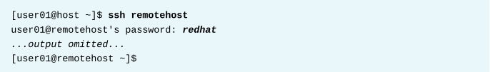

第十章 配置与保护SSH
目标：
- 使用OpenSSH配置远程系统上的安全命令行服务。
章节：
- 使用SSH访问远程命令行
- 配置基于SSH密钥的身份认证
- 自定义OpenSSH服务配置
第一节：使用SSH访问远程命令行
目标：
- 完成本节后，学生应该能使用ssh登录远程系统并运行命令。
什么是OPENSSH?
- OpenSSH为Linux提供Secure Shell和SSH协议。
- SSH协议通过不安全的网络来实现通信加密，可支持SSHv1、SSHv2版本。
- 可以使用ssh命令连接远程系统，也可以在远程系统上直接运行命令。
安全SHELL示例：
- 登录远程系统


- 在远程系统上运行命令

识别远程用户：
- 使用w命令以识别远程登录的用户

SSH主机密钥：
- SSH通过公钥加密的方式保持通信安全。
- 当SSH客户端连接到SSH服务器时，在该客户端登录之前，服务器会向其发送公钥副本。
- 这可用于设置通信的安全加密，并可验证客户端的机器。
- 当用户使用ssh命令连接到SSH服务器时，该命令会检查它在本地已知主机文件（/etc/ssh/ssh_known_hosts
或~/.ssh/known_hosts）中是否有该服务器的公钥副本。
- 系统管理员可在/etc/ssh/ssh_known_hosts中进行配置，或者用户的主目录中添加包含服务端公钥的
~/.ssh/known_hosts文件。
- 如果客户端的已知主机文件中没有公钥的副本，ssh命令会询问是否仍要登录。
- 如果仍进行登录，公钥的副本就将保存到~/.ssh/known_hosts文件中，以便将来自动确认服务器身份。

- 如果客户端有公钥的副本，ssh就会将该服务器已知主机文件中的公钥与它收到的公钥进行对比。
- 如果公钥不匹配，客户端会假定服务器的网络流量已遭劫持或服务器已被入侵，并且请求用户确认
是否要继续连接。
* 注意：
1. 在特定于用户的~/.ssh/config文件或系统范围的/etc/ssh/ssh_config中将 StrictHostKeyChecking
参数设为yes，使得ssh命令在公钥不匹配时始终中断SSH连接。
2. $ man 5 ssh_config：查看ssh客户端使用与参数含义

3. 可设置 StrictHostKeyChecking 参数分别为ask、yes、no以匹配SSH服务端公钥，
默认为ask，提示SSH客户端是否信任该SSH服务端公钥。
4. ssh命令的参数优先级：命令行大于配置文件，可在命令行直接指定。

SSH已知主机公钥管理：
- 如果由于硬盘驱动器故障而导致服务端公钥丢失或由于某些原因而导致公钥更换，则需要编辑
客户端已知的主机文件以确保将旧服务端公钥条目替换为新公钥条目，确保登录时不产生错误。
- 客户端将服务端公钥存储在 /etc/ssh/ssh_known_hosts 或SSH客户端上每个用户的 ~/.ssh/known_hosts。
- 每个公钥各占一行。
- 第一个字段是共享该公钥的主机名和IP地址的列表。
- 第二个字段是公钥的加密算法。
- 最后一个字段是公钥本身。
* 注意：由于SSH服务端公钥改变，模拟中间人攻击：

- SSH服务端的公钥存储路径：/etc/ssh/*key.pub

练习 P315：ACCESSING THE REMOTE COMMAND LINE
第二节：配置基于SSH密钥的身份认证
目标：
- 完成本节后，学生应该能将用户账户配置为使用基于密钥的⾝份验证来安全地登录远程系统，
并且无需输入密码。
基于SSH密钥的身份验证：
- 基于私钥-公钥（private-public key）可以配置SSH服务器，不输入密码就能登录服务器。
- 用户必须生成公私密钥对，其中私钥保存于SSH客户端，用于身份验证解密，必须妥善保管。
- 公钥复制到希望连接的远程系统上，用于验证私钥，公钥不需要保密。
生成SSH密钥：
- ssh-keygen命令创建用户的公钥和私钥，创建过程中要求交互输入密码用于加密私钥，
其公私钥密钥对默认保存于 ~/.ssh/id_rsa 和 ~/.ssh/id_rsa.pub 文件中。

- $ ssh-keygen -f <key_name>：指定SSH私钥名称生成公私钥密钥对

共享公钥：
- ssh-copy-id命令可以将用户的SSH公钥（默认~/.ssh/id_rsa.pub）复制到目标系统
指定用户的~/.ssh/authorized_keys中。
- 若生成的公私钥密钥对为指定的文件，共享公钥时需指定公钥文件。
$ ssh-copy-id -i ~/.ssh/<key_name>.pub <remote_user>@<remote_host>

- 使用指定的公钥免密登录SSH服务端时，SSH客户端需指定相应私钥。
$ ssh -i ~/.ssh/<key_name> <remote_user>@<remote_host>

* 注意：
1. 使用指定的私钥免密码登录远程主机常使用于登录云实例（AWS EC2、OpenStack instance）。
* SSH验证方式原理：
1. 对称加密示意：
a. 使用相同密钥加密的数据必须使用该密钥才能解密。


2. 非对称加密示意：公私钥密钥对加密
a. 使用公钥加密的数据必须使用私钥解密，反之，使用私钥加密的数据必须使用公钥解密。
b. 非对称加密的安全强度高。
3. SSH验证方式包括：结合对称加密与非对称加密
a. 基于密码的验证（password-based）
b. 基于SSH密钥验证（key-based）
c. GSSAPI Kerberos验证
4. 通常使用前两种方式实现验证。
5. 基于密码的验证原理：
a. 当客户端发起SSH请求，服务器会将其公钥发送给客户端。
b. 客户端根据服务端发来的公钥对登录密码进行加密
c. 加密后的信息回传给服务端，服务端用其私钥解密，将解密的密码与本地用户的密码进行比对，
两者一致则用户登录成功，不一致则用户登录失败。

6. SSH服务端公钥传递过程中存在的安全隐患：中间人攻击（man-in-the-middle attack）
a. 在SSH公钥传递过程中如何保证公钥的真实性是安全连接的基础。
b. 在SSL/TLS连接中可引入CA证书授权中心验证数字证书的真实性，而在SSH连接中常用ECDSA数字签名
算法将服务端公钥生成指纹，方便用于后续连接的公钥比对。
c. 第一次连接时SSH客户端需接受服务端公钥，但在该过程中无法确定服务端公钥的真实性，这就取决于对
安全性取舍。
d. 因此，如果SSH服务端公钥发生改变或SSH服务端更换不同的主机但IP地址保持不变，SSH客户端连接时
将提示为中间人攻击（演示过程如上所示）！

7. 基于SSH密钥验证的原理：
a. 客户端将自己的公钥存放于服务端的~/.ssh/authorized_keys文件中。
b. 服务端接收到客户端的连接请求后，会在~/.ssh/authorized_keys文件中匹配到客户端的公钥pubKey，
并生成随机数R，用客户端的公钥对该随机数进行加密得到pubKey(R)，然后将加密后信息发送给Client。
c. 客户端通过私钥进行解密得到随机数R，然后对随机数R和本次会话的SessionKey利用MD5生成消息摘要（哈希值）
Digest1，发送给服务端。
d. 服务端会也对随机数R和SessionKey利用同样消息摘要算法生成Digest2。
e. 服务端最后比对Digest1和Digest2是否相同，两者一致完成认证过程。
* 注意：SessionKey在客户端向服务端发起连接请求后，由双方协商生成。

8. SSH客户端与服务端公私钥分布示意：

9. SSH连接过程解析：
a. 使用SSH客户端的Debug模式查看远程连接过程，如下所示：
$ ssh [-v|-vv|-vvv] <remoteuser>@<remotehost>
b. SSH服务端可通过WireShark抓包分析SSH过程。
c. 以下演示基于密码的Debug连接过程：
[root@master ~]# ssh -v root@192.168.1.165
==> 第一阶段：双方确认协议版本号和SSH版本号
OpenSSH_6.6.1, OpenSSL 1.0.1e-fips 11 Feb 2013
debug1: Reading configuration data /etc/ssh/ssh_config
debug1: /etc/ssh/ssh_config line 56: Applying options for *
debug1: Connecting to 192.168.1.165 [192.168.1.165] port 22.
debug1: Connection established. -> SSH客户端与服务端连接建立
debug1: permanently_set_uid: 0/0
debug1: identity file /root/.ssh/id_rsa type -1
debug1: identity file /root/.ssh/id_rsa-cert type -1
debug1: identity file /root/.ssh/id_dsa type -1
debug1: identity file /root/.ssh/id_dsa-cert type -1
debug1: identity file /root/.ssh/id_ecdsa type -1
debug1: identity file /root/.ssh/id_ecdsa-cert type -1
debug1: identity file /root/.ssh/id_ed25519 type -1
debug1: identity file /root/.ssh/id_ed25519-cert type -1
debug1: Enabling compatibility mode for protocol 2.0 -> 使用的SSH协议版本：SSHv2
debug1: Local version string SSH-2.0-OpenSSH_6.6.1
debug1: Remote protocol version 2.0, remote software version OpenSSH_7.4
debug1: match: OpenSSH_7.4 pat OpenSSH* compat 0x04000000
==> 第二阶段：双方确认/支持使用的数据加密算法、消息摘要算法、主机公钥等信息。
debug1: SSH2_MSG_KEXINIT sent
debug1: SSH2_MSG_KEXINIT received
debug1: kex: server->client aes128-ctr hmac-sha1-etm@openssh.com none
debug1: kex: client->server aes128-ctr hmac-sha1-etm@openssh.com none
debug1: kex: curve25519-sha256@libssh.org need=20 dh_need=20
debug1: kex: curve25519-sha256@libssh.org need=20 dh_need=20
debug1: sending SSH2_MSG_KEX_ECDH_INIT
debug1: expecting SSH2_MSG_KEX_ECDH_REPLY
debug1: Server host key: ECDSA dc:a3:46:59:a8:81:a3:33:5e:30:fa:cb:d8:4d:ca:7b
The authenticity of host '192.168.1.165 (192.168.1.165)' can't be established.
ECDSA key fingerprint is dc:a3:46:59:a8:81:a3:33:5e:30:fa:cb:d8:4d:ca:7b. -> SSH服务端的公钥指纹，用于验证其真实性。
Are you sure you want to continue connecting (yes/no)? yes
Warning: Permanently added '192.168.1.165' (ECDSA) to the list of known hosts. -> ~/.ssh/known_hosts
debug1: ssh_ecdsa_verify: signature correct -> SSH服务端公钥指纹验证通过，其数字签名正确。
debug1: SSH2_MSG_NEWKEYS sent
debug1: expecting SSH2_MSG_NEWKEYS
debug1: SSH2_MSG_NEWKEYS received
debug1: SSH2_MSG_SERVICE_REQUEST sent
debug1: SSH2_MSG_SERVICE_ACCEPT received
==> 第三阶段：进入用户身份验证过程
debug1: Authentications that can continue: publickey,gssapi-keyex,gssapi-with-mic,password -> SSH支持的多种用户认证方式
debug1: Next authentication method: gssapi-keyex
debug1: No valid Key exchange context
debug1: Next authentication method: gssapi-with-mic
debug1: Unspecified GSS failure. Minor code may provide more information
No Kerberos credentials available (default cache: KEYRING:persistent:0)
debug1: Unspecified GSS failure. Minor code may provide more information
No Kerberos credentials available (default cache: KEYRING:persistent:0)
debug1: Next authentication method: publickey
debug1: Trying private key: /root/.ssh/id_rsa
debug1: Trying private key: /root/.ssh/id_dsa
debug1: Trying private key: /root/.ssh/id_ecdsa
debug1: Trying private key: /root/.ssh/id_ed25519
debug1: Next authentication method: password
root@192.168.1.165's password:
debug1: Authentication succeeded (password). -> 基于密码的验证成功
Authenticated to 192.168.1.165 ([192.168.1.165]:22).
==> 第四阶段：验证成功后等到一个新的session，及设置环境变量等，最后得到一个shell。
debug1: channel 0: new [client-session]
debug1: Requesting no-more-sessions@openssh.com
debug1: Entering interactive session.
debug1: client_input_global_request: rtype hostkeys-00@openssh.com want_reply 0
debug1: Sending environment.
Last login: Wed Jan 15 15:51:59 2020 from 192.168.1.210
[root@devops0 ~]#
练习 P323：CONFIGURING SSH KEY-BASED AUTHENTICATION
第三节：自定义OpenSSH服务配置
目标：
- 完成本节后，学生应该能限制直接以root身份登录，并为OpenSSH服务禁用基于密码的身份验证。
配置OPENSSH服务器：
- OpenSSH的守护进程名为sshd，主配置文件为/etc/ssh/sshd_config。
- $ man 5 sshd_config：查看sshd_config配置文件的参数含义
- 推荐禁用root用户远程登录和基于密码的身份验证（使用公私钥验证方式替代）。
禁止超级用户使用SSH登录：
- 黑客喜欢猜测root密码
- root用户具有最高权限
- 建议普通用户进行登录，在有需要时提权成为root用户。
- SSH守护进程的主配置文件/etc/ssh/sshd_config，默认为 PermitRootLogin yes。
- 修改以上参数为 PermitRootLogin no 以禁止root用户远程登录。
- 若禁止root用户基于密码的远程登录，允许基于密钥的登录，设置为：
PermitRootLogin without-password

- $ systemctl reload sshd：重载sshd配置文件使其生效

* 注意：
1. 生产环境中若未正确配置SSH服务及相关安全规则很可能重启（restart）服务后将无法连接！
2. 连接SSH服务无响应的可能情况：
a. 网络原因：
* 主机网络原因：网络与路由配置错误、网卡（网络接口）故障、网线松动、网线故障、线序插错等。
* 交换机与路由器原因：网络接口故障、网线松动、网线故障、线序插错、VLAN配错、路由配错等。
b. SSH服务验证原因：
* /etc/ssh/sshd_config配置问题：root用户登录、密码/公钥验证、允许登录的用户白名单等。
* PAM安全认证问题：/etc/pam.d/sshd中 pam_listfile.so 模块的参数配置
* 应用层防火墙问题：/etc/hosts.allow、/etc/hosts.deny
c. 远程连接终端工具原因：多次尝试
* SecureCRT 7/8
* XShell 5/6
* PuTTY
禁止对SSH进行基于密码的身份验证：
- 黑客无法通过猜测用户密码攻击已知用户
- 密码相对于公私钥保密性差
- SSH守护进程的主配置文件/etc/ssh/sshd_config，默认为 PasswordAuthentication yes，
将其修改为 PasswordAuthentication no。
- 修改配置后，执行systemctl reload sshd重载只配置文件，使其生效。
练习 P331：CUSTOMIZING OPENSSH SERVICE CONFIGURATION
Lab P337：CONFIGURING AND SECURING SSH